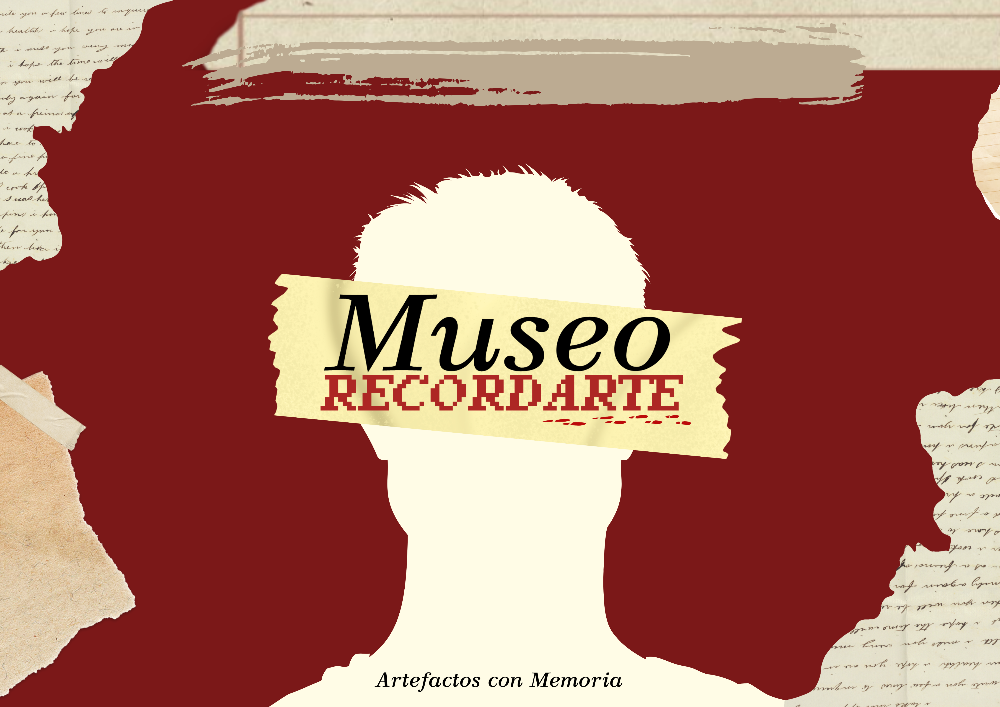
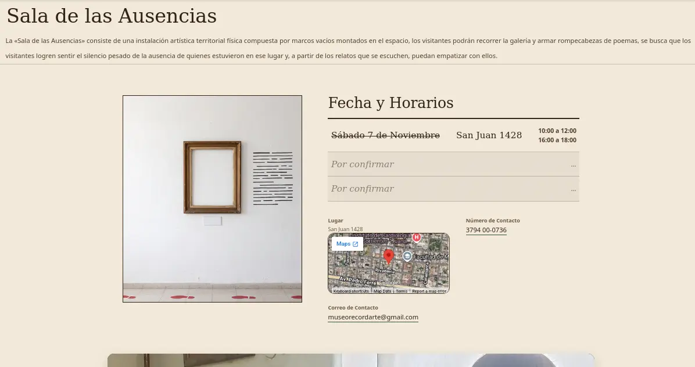
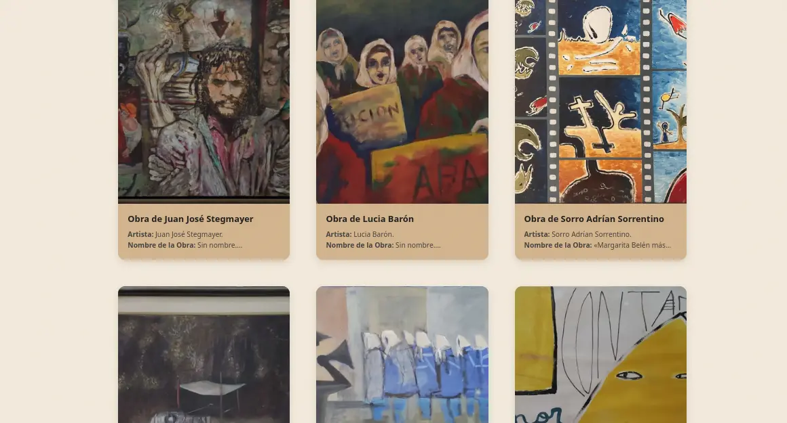

Descubre las expresiones artísticas que desafiaron la censura y el silencio.
Escucha las voces de artistas, referentes de los derechos humanos y trabajadores culturales sobre el rol del arte en la construcción de la memoria.

Adéntrate en una experiencia inmersiva que invita a la reflexión profunda sobre los vacíos que dejó el terrorismo de Estado.

Explora nuestro acervo digital, un espacio diseñado para preservar, democratizar y hacer accesibles piezas fundamentales de nuestra historia.
Fechas y Horarios de la Exhibición
San Juan 1428
3794 00-0736
museorecordarte@gmail.com